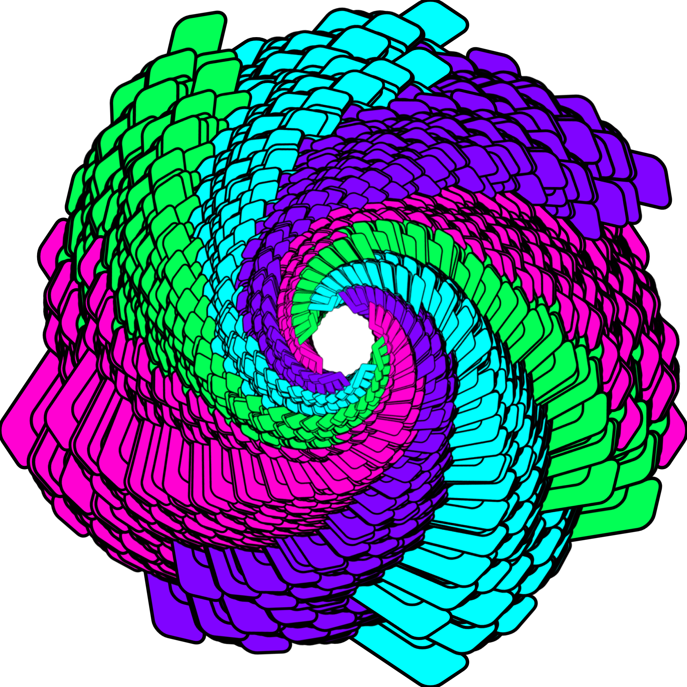
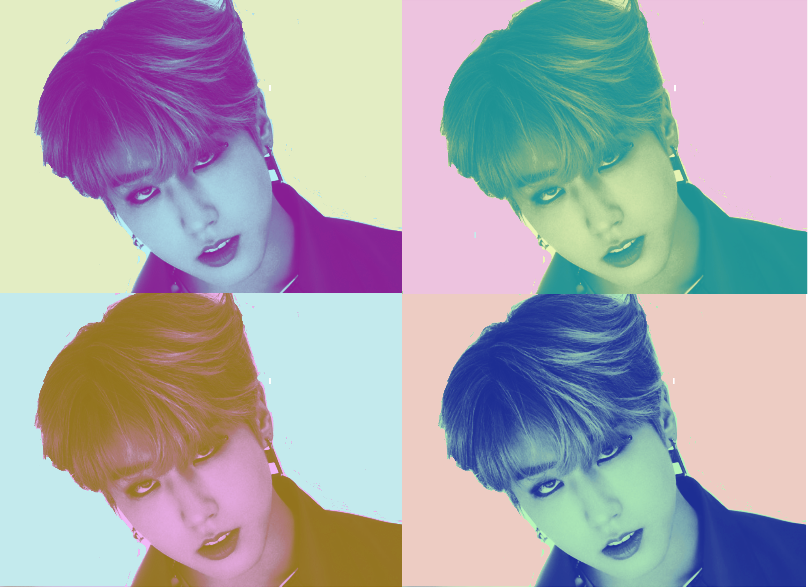
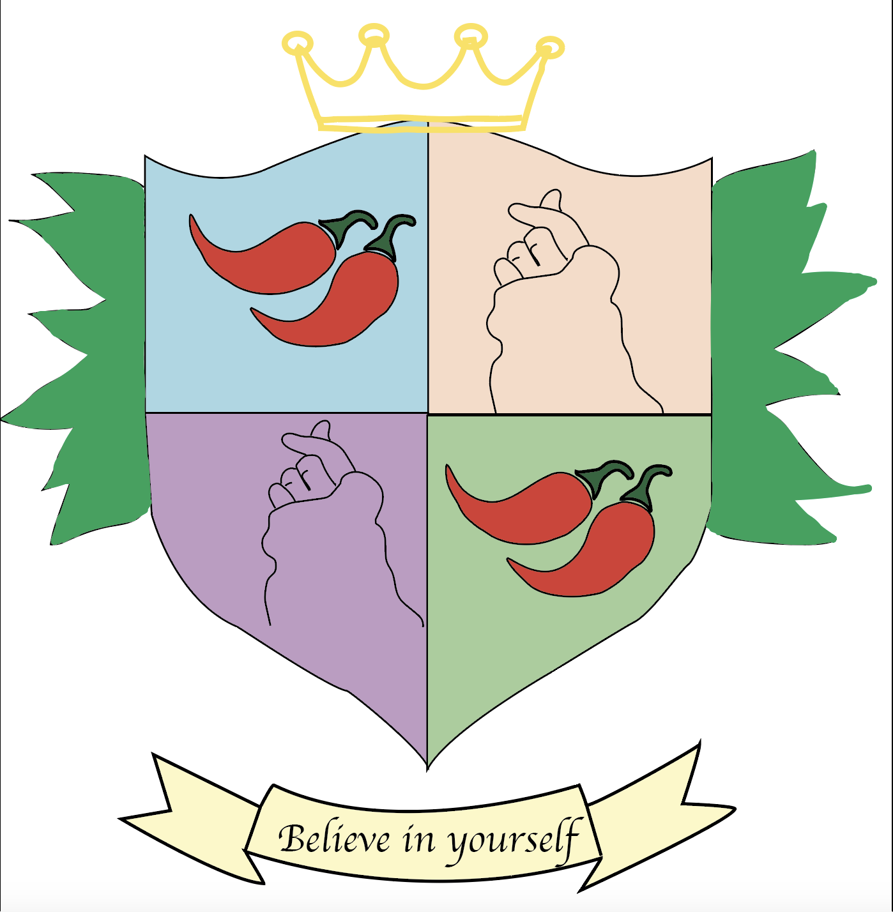
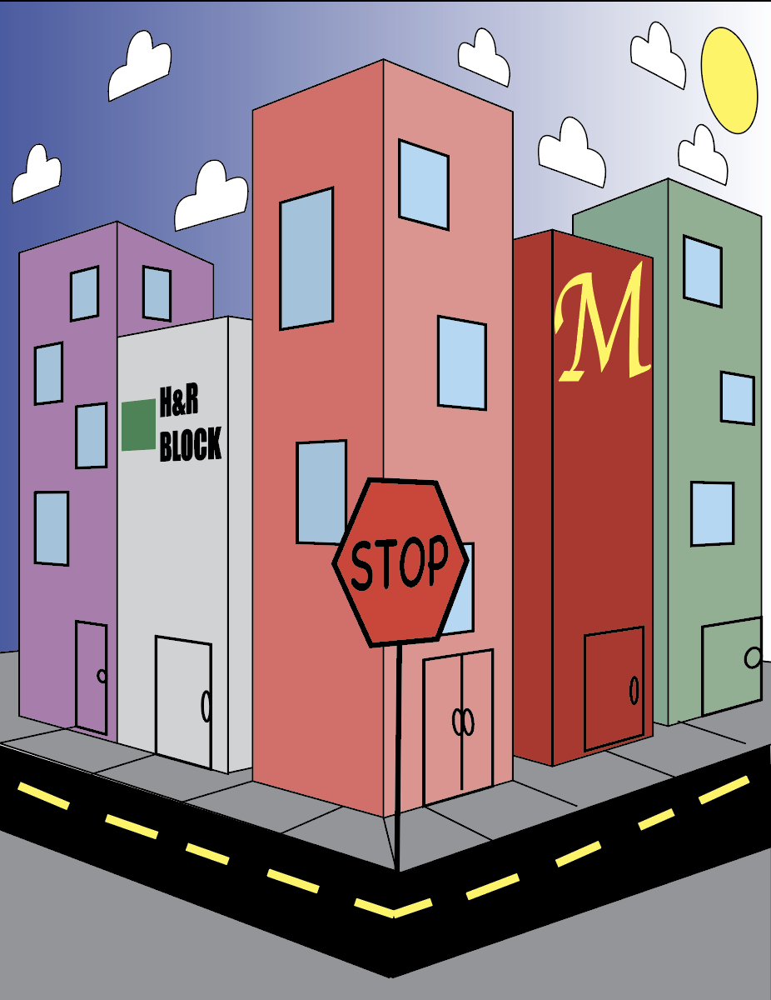
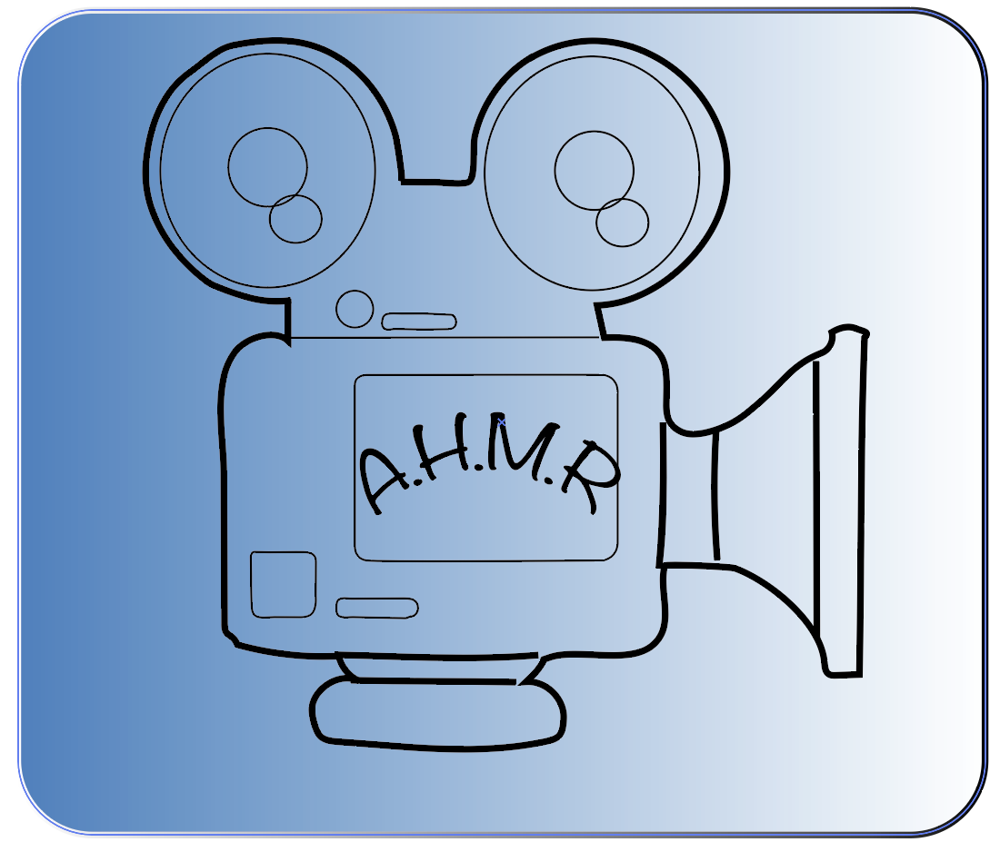

about.html
digitaldesign.html
index.html
tbd.html
Visual Deisgn
Visual Design Gallery
Artifact #1

This is a mandala it was created with check marks making a circle with different type of colors
Artifact #2

This is Han Jisung from Stray kids I used the same photograph but I made the background and his face a different color so they each stand out in different ways
Artifact #3

This is the k-pop group Stray Kids and it's an album cover for their song Thunderous for the background I put thunder because it related to the song title.
Artifact #4

This image represents that I love spicy food
Artifact #5

This image shows how my block looks like near my house.
Artifact #6

This image shows a logo about doing reviews on horror movies.